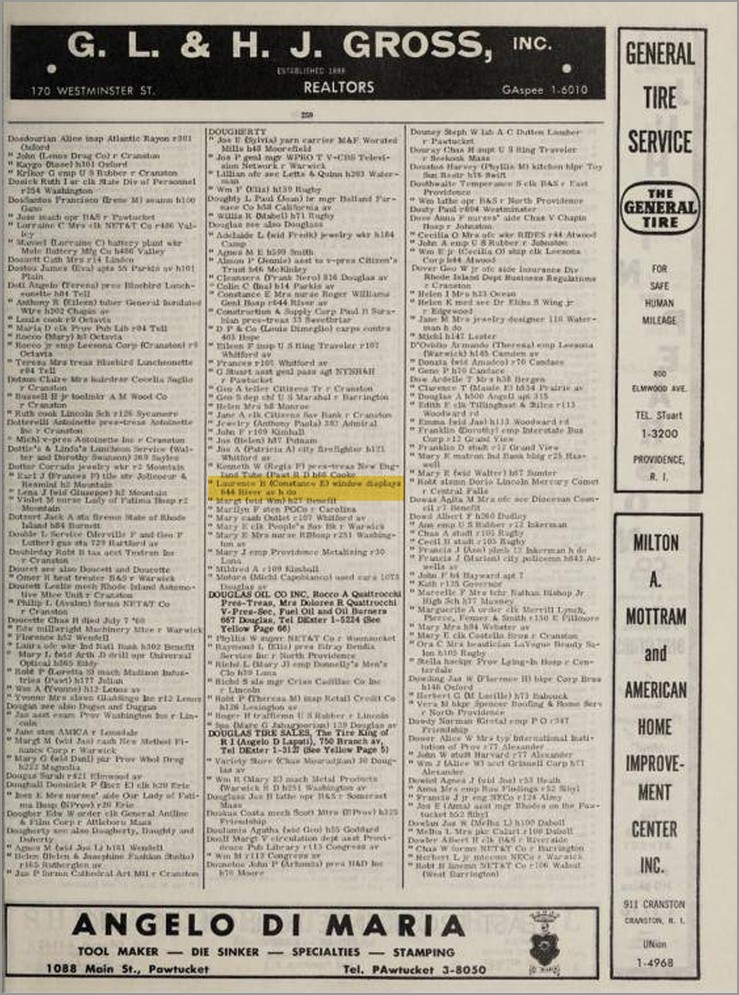
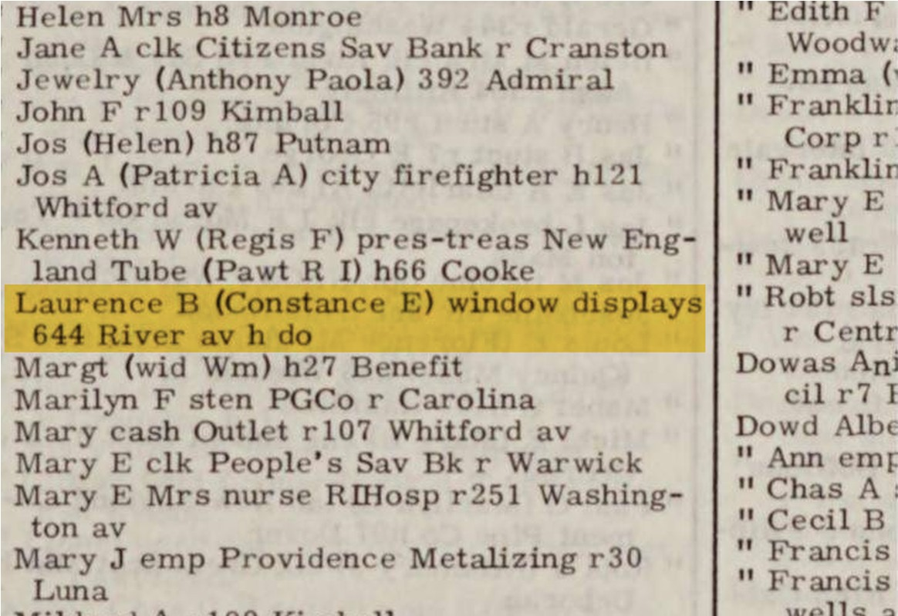

The Names He Carried · The Research
Doug Garceau, comp., “Providence city directory, 1961, page 259,” DOC-054, The Names He Carried: The Research (https://douggarceau.com/the-names-he-carried/archive/items/doc-054.html : accessed [date]); original: Polk's Providence City Directory, 1961, page 259. Internet Archive.


This copy carries yellow highlighting or red outlining added for the book site. It is not on the original.
The second image is an enlarged section of the same document.
Tap an image to open it full size.
Everything as written, including misspellings. [?] marks an uncertain reading. Struck-through words are marked as struck through. Notes in square brackets describe the page and are not part of it.
[A full directory page in very small type. The enlarged section shown on the copy is given word for word below; the rest of the page is too small on this copy to transcribe word for word. The page image is above.] [Page number] 259 [Advertisement across the top] G. L. & H. J. GROSS, INC. ESTABLISHED 1888[?]. 170 WESTMINSTER ST. REALTORS. GAspee 1-6010 [Advertisements down the right side] GENERAL TIRE SERVICE. THE GENERAL TIRE. FOR SAFE HUMAN MILEAGE. 800 ELMWOOD AVE. TEL. STuart 1-3200. PROVIDENCE, R. I. / MILTON A. MOTTRAM and AMERICAN HOME IMPROVEMENT CENTER INC. 911 CRANSTON, CRANSTON, R. I. UNion 1-4968 [Advertisement across the bottom] ANGELO DI MARIA. TOOL MAKER — DIE SINKER — SPECIALTIES — STAMPING. 1088 Main St., Pawtucket. Tel. PAwtucket 3-8050 [Enlarged section, middle column] Helen Mrs h8 Monroe Jane A clk Citizens Sav Bank r Cranston Jewelry (Anthony Paola) 392 Admiral John F r109 Kimball Jos (Helen) h87 Putnam Jos A (Patricia A) city firefighter h121 Whitford av Kenneth W (Regis F) pres-treas New England Tube (Pawt R I) h66 Cooke Laurence B (Constance E) window displays 644 River av h do Margt (wid Wm) h27 Benefit Marilyn F sten PGCo r Carolina Mary cash Outlet r107 Whitford av Mary E clk People's Sav Bk r Warwick Mary E Mrs nurse RIHosp r251 Washington av Mary J emp Providence Metalizing r30 Luna Mildred A r109 Kimball [partly cut off] [The right-hand column is cut off at the edge of the enlarged section]